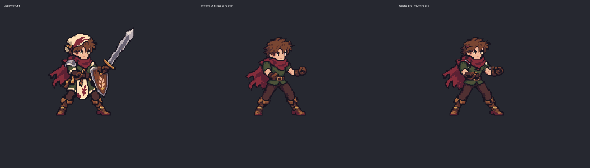
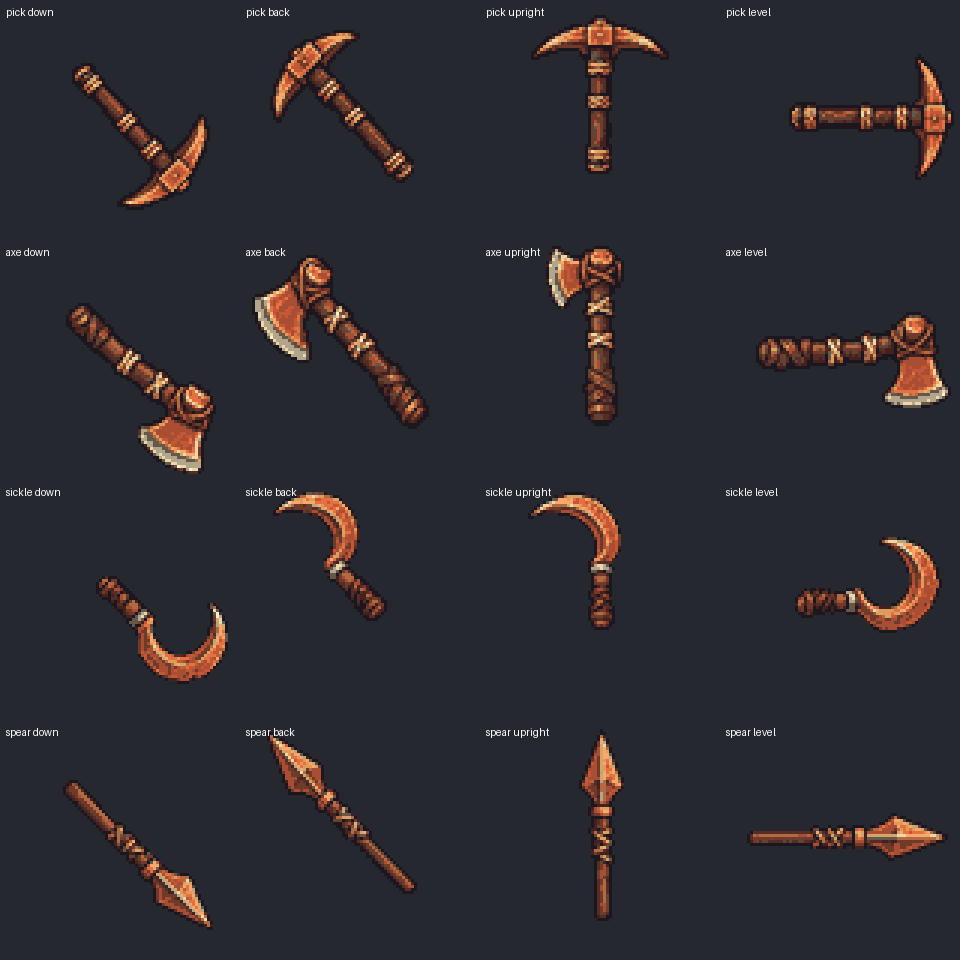

Equipment fitting workshop
Shared tools and the first body-layer proof, beside the approved heroes. This is a working fitting bench. It is not a finished or approved equipment pack.
37 approved source poses available. Wren’s seven gathering poses are missing. New body layers, armour and equipment fitting remain in progress; originals are unchanged.
First protected-pixel body proof
Left: approved outfit. Middle: rejected unmasked generation. Right: masked recut candidate. Pixels outside the recorded removal mask are preserved exactly. Visual fit still needs approval.

Shared copper tools — native views
All four tools have separately authored down, back, upright and level views. No artwork is rotated in code. Additional pose-specific views may be needed. These exports use reserved material ramps and await fitting review.
